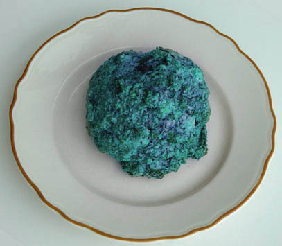

<!DOCTYPE html PUBLIC "-//w3c//dtd html 4.0 transitional//en">
<html>
<head>
<meta http-equiv="Content-Type" content="text/html; charset=UTF-8"/>
  <meta http-equiv="Content-Type" content="text/html; charset=iso-8859-1">
  <meta name="Author" content="IBM Employee">
  <meta name="GENERATOR" content="Mozilla/4.75 [en] (Windows NT 5.0; U) [Netscape]">
  <title>Home</title>
</head>
<body text="#000000" bgcolor="#ffcc99" link="#0000ee" vlink="#551a8b" alink="#ff0000">

<p>Nowadays more and more people are considering the spiritual
dimension
of their lives and giving thought to how their daily activities impact
their fellow passengers on Spaceship Earth.&nbsp; Science has given us
an ever-increasing ability to control nature and our relation to it,
but
this awesome ability has not been accompanied by any noticeable
increase
in the kindness and respect with which we treat our fellow
beings.&nbsp;
Quite the contrary.&nbsp; To the hunter-gatherer, hunting was a holy
act,
accompanied by prayer, ritual, and often an apology to the prey before
or after killing it.&nbsp; We, on the other hand, do not need to kill
to
survive, but kill anyway, on a vast scale, treating our victims with
the
anonymous disrespect of a high-altitude bombardier.
</p>
<p><b>Can we avoid this cruelty?&nbsp;</b> Many thoughtful people have
embraced some form of vegetarianism, adopting practices long
traditional
with Hindus, Seventh Day Adventists, and other groups.&nbsp; But that
is
only a partial solution.&nbsp; Modern molecular genetics and
biochemistry
has proved beyond doubt the interrelatedness of all living things, from
the lowliest bacterium to the tallest redwood.&nbsp; We are scarcely
less
related to the wheat or the yeast in a loaf of bread than we are to our
fellow animals. We can no longer hide behind the idea that these life
forms
are not our kin, nor can we rationalize our mistreatment of them by
saying
that plants, fungi, and microbes are incapable of suffering.&nbsp; The
instinct to avoid pain and noxious stimuli, and the restless search for
favorable conditions, which Thomas Jefferson called the pursuit of
happiness,
are as universal among living beings as their DNA.
</p>
<p><b>If we refuse to eat our relatives, what <i>CAN </i>we eat?&nbsp;</b>
Fortunately, the same sciences of chemistry and biology that reveal our
kinship to all life have freed us at last from the need to kill.&nbsp;
Although most people are suprised to hear it, it is possible to live
and
thrive on a diet consisting entirely of foods of<b> mineral </b>origin.&nbsp;
This is because every one of the several dozen nutrients the human body
requires - carbohydrate, amino acids, fats, vitamins, and of course
minerals
- can be synthesized or extracted from air, water, and rock without the
involvement of any life form, aside from the chemists who perform these
miraculous transformations.&nbsp; The <b>Mineralarians </b>are an
international
association of people, diverse in other respects, who share the common
determination to subsist on foods of mineral origin, thereby sparing
our
fellow beings the victimization that has been their lot, at our hands
for
the last million years, and before that at the claws and jaws of
previously
dominant species.
</p>
<p><b>Isn't
this all
a bit unnatural?&nbsp; </b>Certainly it is more natural to eat meat
and
vegetables than chemicals made from rocks and air, but natural is not
always
good.&nbsp; Many of the finest creations of the human spirit, music for
example, are not natural.&nbsp; Nature, for all the good that can be
said
about it, is full of cruelty and suffering, and there can be no nobler
application for our vaunted intelligence than devising ways to mitigate
cruelty, especially when we are the cause.&nbsp; If a "primitive"
hunter
were offered the chance, through technology, to spare his prey, would
he
not, like Abraham, thank God for freeing him from the hateful duty he
was
about to perform?
</p>
<p><b>How are Mineralarian foods made?&nbsp; </b>Starting with carbon
from
coal
and petroleum, hydrogen from water and nitrogen and oxygen from air, a
few feedstocks of simple organic chemicals are made.&nbsp; Some,&nbsp;
like glycerine (C<font size="-1">3</font>H<font size="-1">8</font>O<font size="-1">3)</font>,
are already nutritious and digestible; others, like methanol, ammonia,
and acetaldehyde, are merely intermediates along the way to
synthesizing
the dozens of amino acids, fatty acids, and vitamins the body needs in
greater or lesser quantity.&nbsp;&nbsp; Many of the synthetic reactions
mimic those that occur naturally in plants and microbes, but we carry
them
out with mineral catalysts in a cruelty-free laboratory
environment.&nbsp;&nbsp;
The body's own metabolism picks up where our chemistry leaves off,
converting
the few dozen essential nutrients in mineralarian food into the
hundreds
and thousands of specialized molecules, including DNA and proteins,
required
for life.&nbsp; Indeed the flexibility of human&nbsp; <a href="http://www.expasy.ch/cgi-bin/show_thumbnails.pl">metabolism</a>&nbsp;
(which we share with other organisms) puts our chemists to shame.&nbsp;
For example, starting from a single synthetic nutrient already
mentioned,
glycerine, the body can make all the carbohydrates it needs, most of
the
fats, and about half the amino acid used to build proteins.&nbsp; Some
nutrients cannot be made in the body, for example essential amino acids
and vitamins, but only one of these -&nbsp; <a href="http://www.chm.bris.ac.uk/motm/vitaminb12/structure.html">Vitamin
B12</a>&nbsp; - is expensive and difficult to synthesize in the
laboratory.&nbsp;
Fortunately the body needs only a little of it - a thousandth of an
ounce
is a lifetime supply. To complete the diet, minerals like calcium and
iron,
and trace elements like copper and molybdenum, obtained from igneous
and
sedimentary rocks, are added .
</p>
<p><b>The
bad news.&nbsp; </b>While there is no doubt of the wholesomeness of a
mineralarian
diet, the same cannot be said for its taste and texture.&nbsp; While
some
artificial flavors are quite adequate, it has so far proven impossible
even to approximate the texture of, say, a freshly baked loaf of bread
using mineralarian ingredients. No one can pretend that mineralarian
food
would be as pleasant to eat as traditional food. But we were not put on
this earth merely to satisfy to our senses and appetites, and
mineralarians
find that it is a small sacrifice to forego the delicious cruelty of
"natural"
food in furtherance of a greater good.
</p>
<p><b>Strict Mineralarianism.</b> Some mineralarians choose not to eat
foods made from fossil fuels like coal and petroleum, or fossiliferous
sedimentary rocks, for the same reason they would be not want to eat
road
kills.&nbsp; Fossils are usually the result of violence and often
contain
plain evidence of a being's untimely and painful death.&nbsp; To be
sure,
the violence was not due to human cruelty or negligence, and indeed
usually
predates the appearance of humans on earth, but it is violence
nonetheless.&nbsp;
For those who do not wish to bring the fruits of ancient violence into
their bodies, we offer a range of strict mineralarian foods made
entirely
from certified igneous rocks and atmospheric gases.
</p>
<p>For some, even these foods are problematic, because there is no
assurance
that an iron or calcium atom freshly spewed from a volcano, or a
nitrogen
atom distilled out of the air, has not at some earlier time in geologic
history been part of a living being who suffered a violent death.&nbsp;
Certainly there are some atoms on earth that have never been part of
living
beings, but there is no sure way to identify them, because all atoms of
a given kind (isotope) are physically indistinguishable. The consumer
of
such atoms is like a reluctant participant in an old-fashioned firing
squad
execution, where it was customary to issue one blank round at random
among
the live rounds, so each squad member would have some chance of not
having
killed. If you are troubled by such thoughts, please contact us.&nbsp;
If there is enough interest, we will investigate the possibility of
creating
foods from material of extraterrestrial origin, in other words from
meteorites.&nbsp;
Such food would be as nutritious and tasty as our other offerings, but
it would likely be quite expensive, because some biologically essential
elements, like nitrogen, occur only in low concentrations in
meteorites.
</p>
<p>You are visitor number&nbsp; .
</p>
<p>(web site (c) C.H. Bennett 2001, email bennetc@bestweb.net)
</p>
<p>&nbsp; 
</p>
</body>
</html>